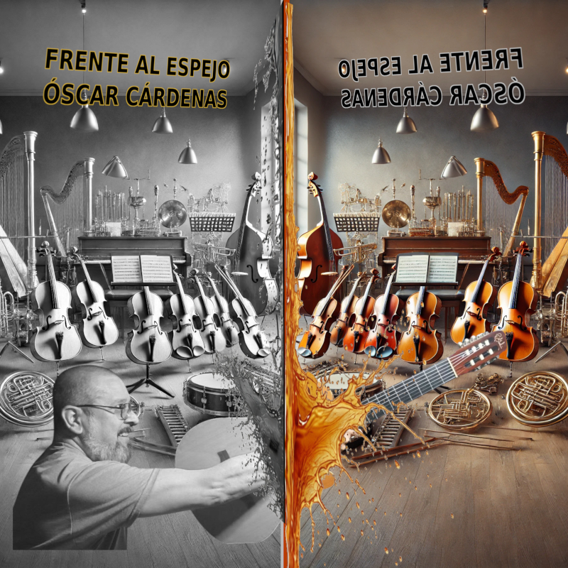

Obras de Óscar Cárdenas
Fecha: [DÍA] de [MES] de 2026
Hora: [HORA]
Lugar: Salón de Usos Múltiples, Plantel Iztapalapa 1

Frente al Espejo
Óscar Cárdenas • 2025
I.
Dos Estudios, para guitarra sola:
• Estudio No. 1 (de arpegios con cruce de dedos)
• Estudio No. 4 (de escalas)
II.
Microsuite, para guitarra sola:
• I- Preludio
• II- Aire de Sarabanda
• III- Andante
• IV- Interludio
• V- Final
III.
De Yúmari III, para guitarra sola:
• III- Allegretto
IV. 15 en Mixolidio, para guitarra sola
V. ¡A la Libertad!, para guitarra sola
VI. A Don Beto Son, para guitarra sola
VII.
Astillas Escritas, para flauta y guitarra:
• I- Allegro
• II- Lento
• III- Allegro
• IV- Muy Lento
• V- Allegro Molto
Flauta: Daniel Hernández
Daniel Hernández es flautista egresado de la Escuela Nacional de Música (actual Facultad de Música de la UNAM), donde estudió con los maestros Rubén Islas y Héctor Jaramillo. Ha participado en orquestas y, principalmente, en grupos de cámara.
De 2001 a 2009 participó activamente en el ensamble de música tradicional japonesa Kasou Kai, con conciertos en México, varias giras al extranjero y en la grabación de un disco. También forma parte del dúo de arpa y flauta con la maestra Mabel Rodríguez, con quien ha presentado conciertos en diversas salas. En 2012 participaron en el Festival de las Noches Blancas en la ciudad de Perm, Rusia.
Actualmente se dedica ampliamente a la docencia y se encuentra preparando material para flauta sola.
Óscar Cárdenas es guitarrista y compositor originario de Chihuahua. Egresado de la Facultad de Música de la UNAM (2004), estudió con Cleofas Villegas, Juan Carlos Chacón, Leo Brouwer y Frank Bungarten. Ha obtenido reconocimientos en concursos nacionales de guitarra y se ha presentado como solista y con orquestas bajo la dirección de Enrique Diemecke, Jorge Córdoba y Enrique Barrios en México y Belice.
Su obra compositiva abarca piezas para guitarra, ensambles de cámara, voz y orquesta. Es miembro de la Liga de Compositores desde 2003, donde actualmente funge como Secretario. En 2025 lanzó Frente al Espejo, producción discográfica con obras de su autoría.
Desde 2004 ejerce la docencia en el Instituto de Educación Media Superior de la CDMX, actualmente en la Preparatoria Iztapalapa 1.
Descarga la versión en PDF para guardar o imprimir
Descargar Programa (PDF)